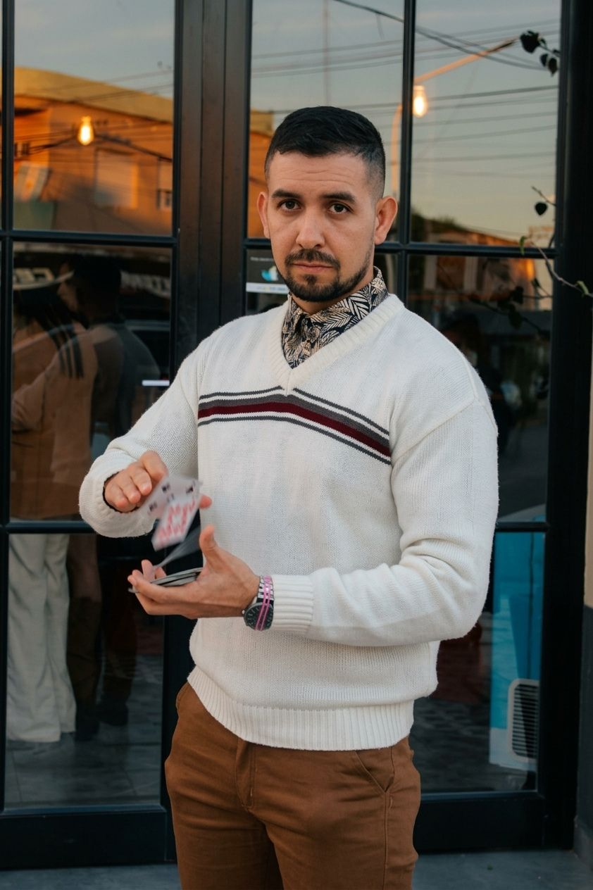
Misión
Crear experiencias mágicas que mezclen ilusión, humor y emoción, llevando alegría y asombro a públicos de todas las edades y generando momentos únicos que perduren en la memoria.
Mi historia
Soy mago e ilusionista de Resistencia, Chaco. Desde los 7 años la magia es mi pasión y hoy es mi camino y mi profesión: combino magia y humor en shows para niños y adultos.
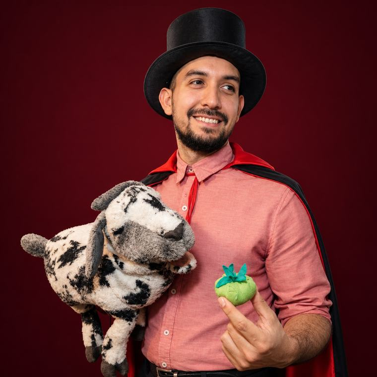
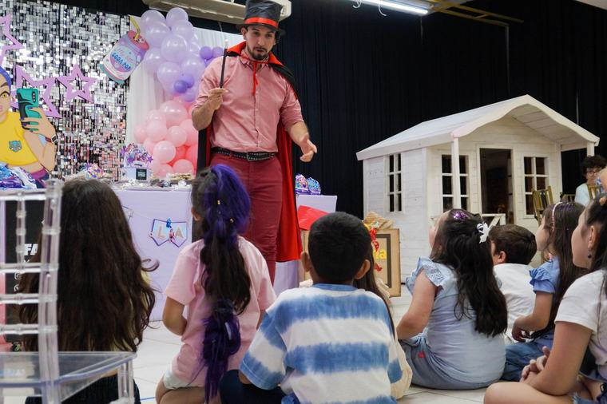
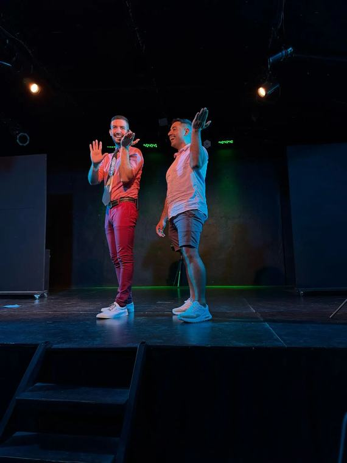
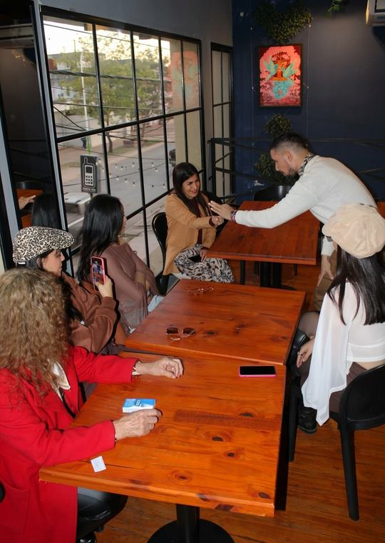
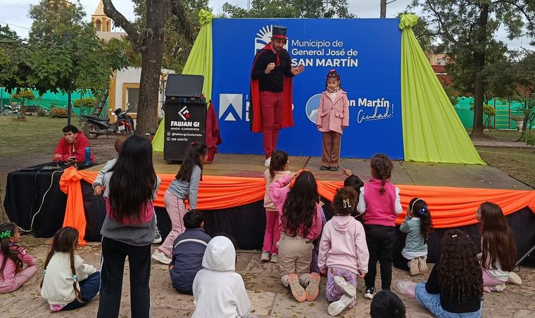
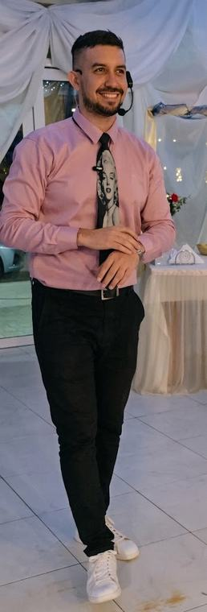
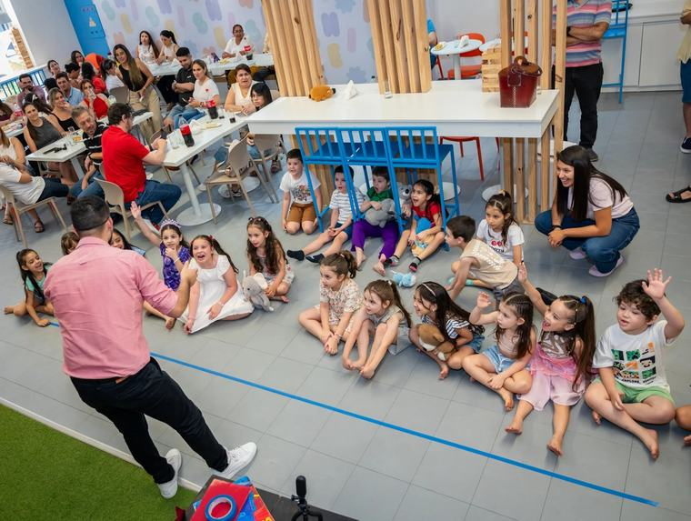
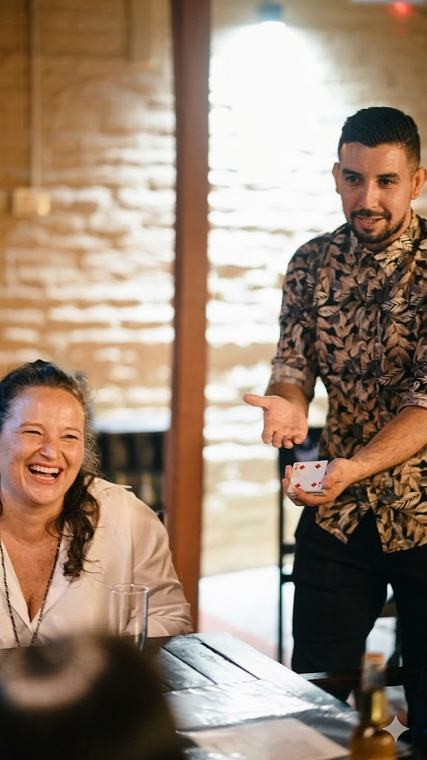
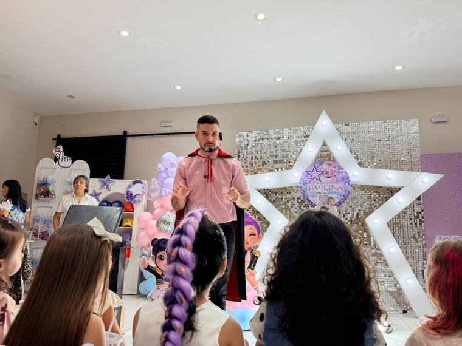
La magia conectó conmigo desde muy pequeño. A los 7 años, un amigo me mostró un truco que había aprendido de una cajita de magia que le regalaron sus padres. Desde ese día siempre tuve mucha curiosidad por conocer los trucos de los magos. Lamentablemente, en el pueblo donde vivía no había acceso para aprender este arte, así que solo podía conformarme con ver los programas de TV o descubrir los trucos viendo al mago enmascarado.
Ya un poco más grande, con 15 años y con acceso a internet, me puse a investigar sobre ilusionismo y encontré videos sueltos de YouTube en los que algunas personas revelaban los secretos (en ese momento había muy poca información). Pensaba que había iniciado mi carrera en el mundo de la ilusión, pero el sueño se frustró: con muy poca práctica y cero conocimiento de teoría, presenté los trucos ante mis compañeros de curso y no sorprendí a nadie. Es más, se dieron cuenta de los trucos y hasta se burlaron.
En ese momento pensé que la magia no era para mí y decidí dejar de intentarlo. Dos años más tarde descubrí en internet un libro que prometía enseñarme a ser un mago de verdad, que transmita y exprese la magia más allá del truco. Ese libro reavivó mi sueño de ser mago y, a partir de ahí, mi vida giró en torno a este arte. Pasé mucho tiempo encerrado practicando, pero con miedo de fracasar nuevamente al presentar los trucos.
En busca de ayuda, pedí consejos por Facebook a otro mago con experiencia, y me dijo una frase que me marcó:
“Si te equivocas es porque estás haciendo. Los que no hacen nada nunca tienen errores, pero tampoco tienen aplausos.”
Después de eso me animé a presentarme por primera vez en un show que organizó mi escuela. La verdad es que mi presentación fue un desastre, pero fue una victoria personal: había superado la barrera del miedo que me frenaba, y eso me dio el impulso que necesitaba para mejorar y hacerlo mejor la próxima vez.
Tiempo después de aquel primer paso, me fui a vivir a Resistencia, la capital chaqueña, donde tuve la oportunidad de unirme a un grupo de ilusionistas llamado «Ilusionistas Urbanos». Durante dos años compartí escenarios, experiencias y aprendizajes con colegas que, al igual que yo, tenían la misma pasión por este arte. Sin embargo, por cuestiones personales y otros proyectos que demandaban mi atención, decidí dar un paso al costado y me alejé de los escenarios por aproximadamente un año.
Más tarde regresé, esta vez de manera unipersonal, con la firme intención de forjar mi propio camino. Pero entonces llegó la pandemia de Covid-19 y, como para muchos artistas, significó un golpe duro. Los shows se detuvieron por completo y, durante cuatro años, elegí dejar de lado las presentaciones. Aun así, la magia jamás me abandonó. Siempre estuvo ahí, acompañándome en silencio, recordándome que era parte de mí. Sentía ese vacío, esa falta de algo esencial, como si una parte de mi identidad estuviera en pausa.
Hoy, después de ese largo silencio, volví con más sabiduría. La pasión renació y ahora la mayor parte de mi tiempo está dedicada a practicar, perfeccionar mi show y seguir creciendo como artista. La diferencia es que hoy la magia no es solo un sueño: también representa una gran parte de mis ingresos mensuales, lo que me permite invertir en mi propio desarrollo profesional. Cada función, cada ensayo y cada aplauso reafirman lo que siempre supe en mi interior: la magia es mi camino, mi arte y mi forma de vida.
A lo largo de todo este recorrido entendí que la magia no es solo trucos ni ilusiones, sino un puente para conectar con las personas, para sorprender, emocionar y dejar recuerdos inolvidables. Por eso quiero agradecer a cada persona que me brindó su tiempo, sus aplausos y su sonrisa, porque sin ustedes la magia no tendría sentido.
Hoy sigo trabajando día a día para llevar lo mejor de mí a cada show, con la certeza de que la magia siempre encuentra la manera de unirnos.
Si estás buscando un espectáculo diferente, que haga reír, soñar y sorprender, te invito a que me contactes. Será un honor llevar mi arte a tu evento y juntos crear un momento verdaderamente mágico.

Crear experiencias mágicas que mezclen ilusión, humor y emoción, llevando alegría y asombro a públicos de todas las edades y generando momentos únicos que perduren en la memoria.
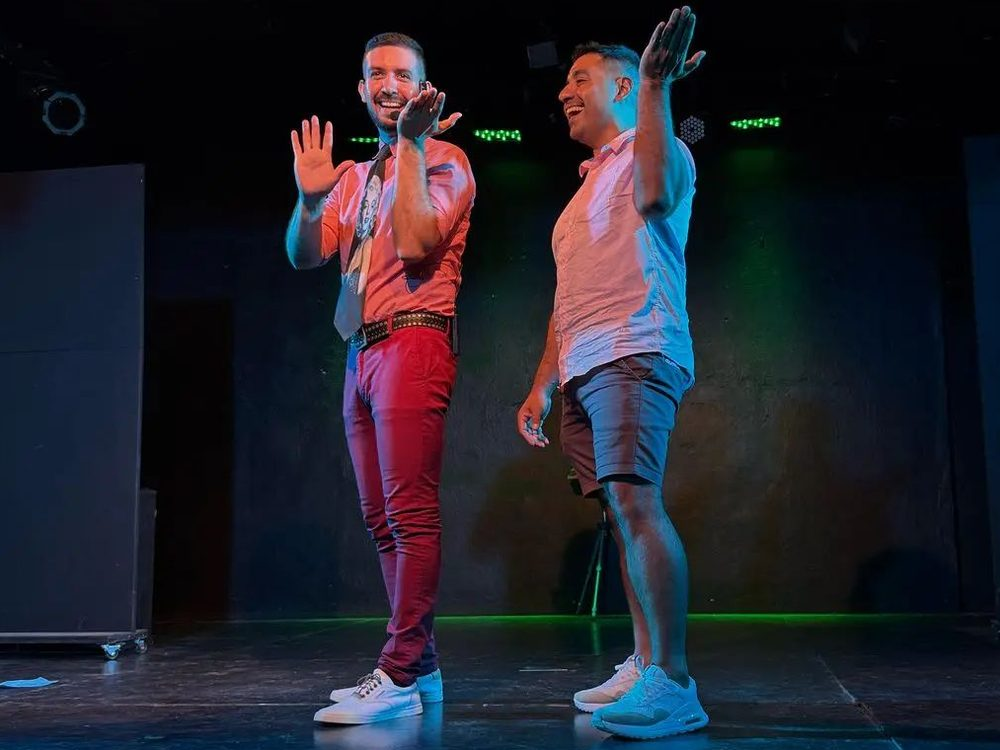
Convertirme en un referente del ilusionismo en la región, reconocido por mi estilo humorístico y creativo, y fomentar la magia como una forma de arte y entretenimiento que conecta y transforma a las personas.
Pedí tu presupuesto online o escribime por WhatsApp.